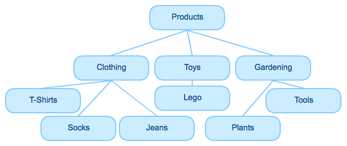
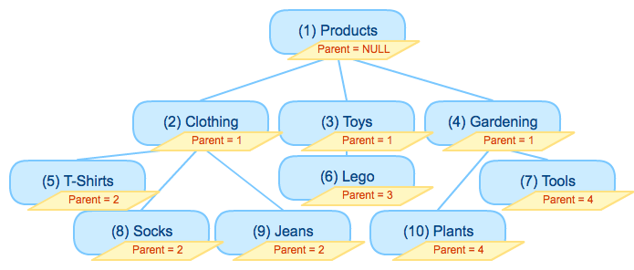
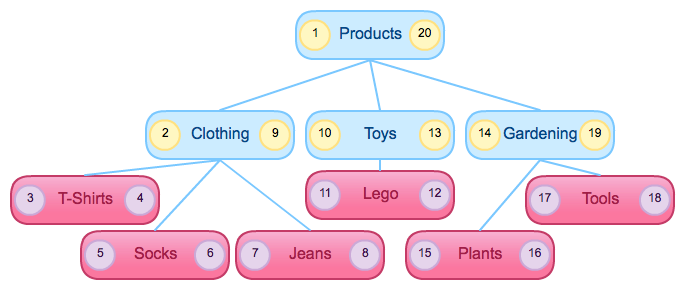
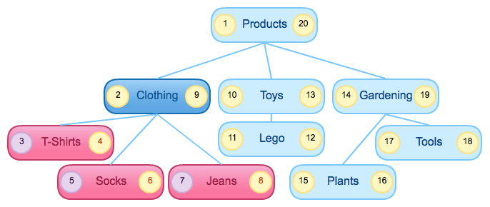

PHP Data Structures
by Ben Dechrai
Melbourne PHP Users Group, April 16th 2013
Overview
- Different types of programmatically structures
- Different data store structures (SQL-based RDBMS)
- Heavy conentration on trees
I will not cover SPL; that's for another time.
Arrays
PHP Arrays
Implemented as an Ordered Map, PHP arrays can represent:
- Collections and Sets
- Hash Tables and Associative Arrays
- Stacks and Queues
- Heaps and Trees
Collections and Sets
The simplest form of array usage - just stores values:
$numbers = array( 1, 2, 3, 4 );
$words = array( 'all', 'your', 'array', 'are', 'belong', 'to', 'us' );
You can perform merges, intersects and diffs on arrays, but note it's much more performant to perform them on the array keys, not values:
// Slow:
$set1 = array( 1, 2, 3 ); $set2 = array( 2, 3, 4 );
$set3 = array_diff( $set1, $set2 );
// Better:
$set1 = array( '1'=>true, '2'=>true, '3'=>true );
$set2 = array( '1'=>true, '2'=>true, '3'=>true );
$set3 = array_diff_key( $set1, $set2 );
Storing Collections and Sets
Databases are tables, so this maps really easy to a table.
CREATE TABLE numbers (
data varchar(255)
);
INSERT INTO numbers (data)
VALUES ( 1 ), ( 2 ), ( 3 ), ( 4 );
| data |
|---|
| 1 |
| 2 |
| 3 |
| 4 |
Hash Tables / Associative Arrays
A structure that maps keys to values by applying a hashing operation on the key to determine the location of the value.
PHP implements this all behind the scenes. You simply use:
$configuration['admin_email'] = 'admin@example.com';
$configuration['products_per_page'] = 64;
Storing Hashes
Add the name to the database table:
CREATE TABLE configuration (
name varchar(255),
data varchar(255)
);
INSERT INTO configuration (name, data)
VALUES ( 'admin_email', 'admin@example.com' ),
( 'products_per_page', 64);
| key | data |
|---|---|
| admin_email | admin@example.com |
| products_per_page | 64 |
Stacks and Queues
Collections that allow you to add elements and remove them:
- First in, last out, like the stack of trolleys at the supermarket, or
- First in, first out, like the queue at the checkout.
Stacks
PHP provides the array_push() and array_pop() functions to push on to a stack and pop off the top of a stack.
$trolleys = array( 1, 2, 3 );
$trolley = array_pop( $trolleys ); // Someone takes a trolley
print_r( $trolleys );
echo "Trolley $trolley\n";
array_push( $trolleys, 4 ); // Someone returns another trolley
print_r( $trolleys );
Results in:
Array ( [0] => 1 [1] => 2 )
Trolley 3
Array ( [0] => 1 [1] => 2 [2] => 4 )
Queues
PHP provides the array_shift() to grab elements off the tail of the queue. Continue to use array_push() to add to the head.
$people = array( 'Alice', 'Bob', 'Charlie' );
array_push( $people, 'Denise' ); // Denise joins the queue
print_r( $people );
$next = array_shift( $people );
echo "Next is $next\n";
print_r( $people );
Results in:
Array ( [0] => Alice [1] => Bob [2] => Charlie [3] => Denise )
Next is Alice
Array ( [0] => Bob [1] => Charlie [2] => Denise )
Stacks and Queues
Stacks and Queues are ordered arrays. Add an order integer to determine order:
CREATE TABLE people (
name varchar(255),
order int unsigned
);
| name | order |
|---|---|
| Denise | 4 |
| Bob | 2 |
| Charlie | 3 |
Trees
Trees are used to represent hierarchical or relational data:
- Hard driver directory structure
- Customer orders, product information, etc
- Category structures

Trees (continued)
Very similar to Dictionaries, except PHP can make use of nested associative arrays:
$json = array(
'users'=> array(
array(
'username' => 'bendechrai',
'orders' => array( ... ),
),
array(
'username' => 'janedoe',
'orders' => array( ... ),
),
),
);
Storing Nested Arrays
Parent IDs
- Simplest and most common implementation
- Every node in a tree has one parent
- Add a pointer in the node to the parent

Database Representation
| id | name | parent_id |
|---|---|---|
| 1 | Products | NULL |
| 2 | Clothing | 1 |
| 3 | Toys | 1 |
| 4 | Gardening | 1 |
| 5 | T-Shirts | 2 |
| 6 | Lego | 3 |
| 7 | Tools | 4 |
| 8 | Socks | 2 |
| 9 | Jeans | 2 |
| 10 | Plants | 4 |
Drawbacks
- Recursion through the tree requires recursion in code
function print_tree( $parent_id=NULL, $level=0 ) {
foreach( get_children( $parent_id ) as $child ) {
echo str_repeat( ' ', $level ) . $child->name . "\n";
print_tree( $child->id, $level+1 );
}
}
- Path to a node cannot be detemined in one query
$node = get_node(7); $path = $node->name;
while( $node = get_node($node->parent_id) ) {
$path = $node->name . " > " . $path;
}
Modified Preorder Tree Traversal
- Slightly more complicated
- Markers determine the order in which a line wraps the tree
Leaf Nodes
- Leaf nodes: left + 1 = right

Node Paths and Parents
- Parents: node.left < child.left && node.right > child.right

Child Nodes
- Children: node.left between parent.left and parent.right

Database Representation
| name | left | right |
|---|---|---|
| Products | 1 | 20 |
| Clothing | 2 | 9 |
| Toys | 10 | 13 |
| Gardening | 14 | 19 |
| T-Shirts | 3 | 4 |
| Lego | 11 | 12 |
| Tools | 17 | 18 |
| Socks | 5 | 6 |
| Jeans | 7 | 8 |
| Plants | 15 | 16 |
Not very human readable, but humans rarely read database tables.
Print Tree
$path = array(); // Keep current path to determine indentation
foreach( get_all( 'ORDER BY left ASC' ) as $node ) {
if( count($path) > 0 ) {
while( end($path)->right < $node->right ) {
array_pop( $path );
}
}
echo str_repeat( ' ', count($path) ) . $node->name . "\n";
$path[] = $node;
}
Path to Node
foreach( get_parents( $plants ) as $node ) {
echo $node->name . " > ";
}
echo $plants->name;
Or, as an SQL one liner!
SELECT GROUP_CONCAT( name SEPARATOR " > " )
AS path FROM category
WHERE left <= node.left
AND right >= node.right